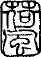

| 断腸亭日乗 06 断腸亭日記巻之五大正十年歳次辛酉 | |
| 永井 荷風 | |
| (2013) | |
断腸亭日乗
断腸亭日記巻之五大正十年歳次辛酉
永井荷風
荷風年四十三
くもりて寒し。雪猶降り足らぬ空模様なり。腹具合よろしからず。炉辺に机を移して旧年の稿をつぐ。深更に至り雨降る。
雨歇まず門前年賀の客なく静間喜ふべし。夜風あり。
朝の中薄く晴れしが午後また雨となる。炉辺執筆前日の如し。浴後独酌。早く寝に就く。
晴れて暖なり。銀座を歩む。
去年十月中起稾せし雨瀟瀟、始めて脱稿。直に浄写す。
九穂子と風月堂に飲む。此日寒の入りなれど暖なり。
几上の水仙花開き尽しぬ。過日松莚子より依頼の脚本筆取るべきやいかゞせむと思ひわづらふ。
二階押入の壁を張る。
日曜日。机に凭ること前日の如し。冬の日少しく長くなりぬ。
晴。
微雨。晩に晴る。
春陽堂の人来り全集第二巻五版の検印を求む。
木曜会運座。曇りて寒し。
雨。
仏蘭西新画家制品展覧会、三越楼上に開かる。銅板山水一葉。パステル裸体図一葉を購ふ。
脚本執筆。
植木阪より狸穴に出で赤羽根橋を渡る。麻布阪道の散歩甚興あり。三田通にて花を購ひ帰る。
不願醒客来訪。
夜雨ふる。脚本の稿を脱す。題して夜網誰白魚といふ。
木曜会に徃く。来会者少し。
晴れてあたゝかなり。夜風吹出でしが月光満楼。燈火なきも枕上猶書をよみ得べし。
毎夜寒月昼の如し。
九穂子と牛門に飲む。
正午松莚子に招かれて日本橋末広に飲む。
諸方より依頼の短冊に揮毫し纔に責を果す。
木曜会なり。
拙作脚本の事につき松莚子岡氏等と竈河岸の八新に会す。小山内君亦来る。
今年は大寒に入りてより益暖なり。鄰家の冬至梅既に満開なり。
温暖頭痛を覚るばかりなり。全集第五巻校正甚多忙。夜に至りて俄に寒し。
雪ふる。
立春。
雪後天気あたゝかなり。
フランスの小説イストワル・コミツクを読む。
偏奇館漫録を春陽堂に郵送す。
春寒甚し。
微恙あり。
風邪。門を掩て出でず。
風邪痊えず。細雨残雪に滴る。庭上の光景甚荒涼。
雨歇まず。
晴。
松竹社七草会例会。正午地震。
風労猶痊えず。
雪まじりの雨なり。
木曜会。
午後三才社に徃かむとせしが風塵甚しければ虎の門より帰る。
晴れて暖なり。我善坊谷上、宮内省御用邸裏の石垣、東向きにて日あたり好く石垣の間より菫蒲英公［＃「蒲英公」はママ］
の花さき出でたり。仙石山を過ぎ電車に乗りて神田小川町仏蘭西書院に赴く。
晴天。去年栽えたる球根悉く芽を発す。
啞〻子と銀座清新軒に飲む。春寒料峭。
早朝雪降りしが須臾にして歇む。日永くなりて薄暮の庭に雀多く来る。
晴天。午後中洲病院に赴き、健康診断を乞ふ。白木屋にて毛布二枚を購ふ。夜具追々破れ来りしかど、此頃の女中には針持ち得ぬもの多くなりたれば、寝具も追〻西洋風にかへるつもりなり。
木曜日。夕刻より雨雪となる。
松莚子に招がれて八新に飲む。
明治座稽古。夜杵屋勝四郎来る。拙作夜網誰白魚上場につき、之に使ふべき独吟鳴物の相談に来りしなり。春風日に従つてあたゝかなり。
早朝より門前に児童の打騒く声きこゆ。即日曜日なるを知る。
風暖なり。銀座に徃き鳩居堂にて細筆五十本ほど購ふ。堀口大学レニヱーの著ヱスキツス［＃「ヱスキツス」はママ］
・ヱニシヱンを郵送し来る。開封して直に読む。
細雨糸の如し。風暖にして花壇の土は軟に潤ひ、草の芽青きこと染めたる如し。
明治座稽古。
午後より明治座惣ざらひなり。余寒の時節芝居小屋に出入するは余の恐るゝ所なり。されど幸にしてまだ風邪ひかず。
明治座舞台稽古なり。帰途風月堂にて晩餐をなし家に帰る。疲労甚し。炉辺更に葡萄酒を傾けて寝に就く。
曇天。明治座初日。
晴天。昨夜明治座初日、二番目出揃ひに至らざりし故今日重ねて見に行きぬ。
毎朝鶯語窗外に滑なり。
木村錦花明治座脚本礼金参百円持参す。夜有楽座に徃く。図らず大石冬牆君に逢ふ。
蜀山人随筆を閲読す。松莚子依頼の脚本資料を得むがためなり。夜九穂子と三十間堀に一酌す。春宵漸く暖なり。
窗外鶯頻に囀る。夜若松屋にて玄文社合評会。
曇りて風静なり。
春雨暖なり。満庭の草色碧きこと油の如し。案頭の桜草花既に落つ。
東仲通鳥屋末広にて七草会あり。
風さむし。啞〻子来る。
晩餐後明治座に赴く。松莚君令閨の鶉にて自作の狂言を見る。
木曜会に徃く。
此日彼岸の入にて風寒し。
庭の梅満開なり。
西南の風烈しく塵埃烟の如し。夜に至り雨ふる。
春分。天気晴朗。
風月堂にて夕餉をなし、有楽座に立寄る。久米氏風労にて顔面いがみ元気なし。花月主人もこの頃持病に悩まさるといふ。
雁来紅の種をまき、菊の根分をなす。晩風冷なり。木下杢太郎その全集第一巻を贈らる。
晴天。母上鷲津貞同道にて来訪せらる。俱に銀座の風月堂にて食事をなし、余は別れて木曜会に徃く。春月朦朧たり。
雨ふりて風寒し。梅花散る。
寒風冬の如し。春陽堂店員歓楽別本製本を持ち来る。
守田勘弥の文藝座を見る。帰途雨。
春酣にして風猶寒し。松莚子に招がれて八新に飲む。
瑞香の花満開なり。夜外より帰来つて門を開くや、香風脉〻として面を撲つ。俗塵を一洗し得たるの思あり。
松莚子と風月堂に会飲す。夜暖にして外套も早や重くなりぬ。
夜暖にして漫歩によし。不願醒客と三十間堀に飲む。
晴、後に雨。
風雨を冒して明治座に徃く。此日初日なり。岡君新作の狂言其姿団七縞を見る。
天気定まらず風烈し。梅花落尽して桜未開かず。
竈河岸八新亭にて正午明治座当祝の酒宴あり。帰途毎夕新聞社に啞〻子を訪ひ、新橋の弥生に一酌す。
風吹き狂ひて夕方より雨ふる。桜花の候、天気日々行楽に適せず。大正二年大窪多与里を書きける頃、花開きて風寒き日多かりし事ども、何ともつかず憶ひ起しぬ。
市兵衛町表通宮内省御用邸塀外に老桜数株あり。昨日あたりより花満開となれり。近鄰の児童羣れ集りて、或は石を投げ、或は竹竿にて枝を折り取らむとす。日本の子供は犬を見れば撲ち、花を見れば折らざれば已まず。獰悪山猿の如し。
春陽堂店員来り、余が旧作の脚本をあつめて一巻となし出版せむことを請ふ。
暮雨瀟瀟たり。
雨中芝山内を過ぐ。花落ちて樹は烟の如く草は蓐の如し。燈下山内秋生君新著青春の序を草す。
午後七草会。夜木曜会運座。雨後半輪の月佳し。
崖の草生茂りて午後の樹影夏らしくなりぬ。
銀座通の商舗早くも麦藳帽を陳列す。路傍に西洋百合天竺葵の球根を売るもの多し。夜鶴屋南北の脚本集を読む。
時〻驟雨あり。
午前驟雨。午後に霽る。
風冷なり。庭の雑草を除く。花壇の薔薇花将に開かむとす。
不願醒客と南鍋町弥生に飲む。
晩餐後築地河岸を歩む。溝渠の水死して月黯澹たり。深更雨ふる。
雨歇まず。腹痛を虞れて湯たんぽを抱き机に凭る。深更に及んで雨滝の如し。
快晴。夜月よし。蛙鳴く。
旧作の脚本を取りまとめて春陽堂に送る。
松莚子に招がれて八新亭に飲む。
新樹書窗を蔽ふ。チユリツプ花開く。
竹田屋の主人一九の膝栗毛を持来る。
薄暮木曜会に徃かむとして驟雨に妨げらる。啞々子と烏森の待合嶺月に飲む。雨後月あり。
天気晴朗。薫風爽颯。
陰る。銀座街上青楓画伯に逢ふ。
風月堂にて偶然松莚子一家門弟を伴うて来るに逢ふ。東仲通を歩み。魯西亜織敷物を買ふ。参拾円なり。
啞々子と新冨座裏の酒亭に飲む。窗を開きて欄干に凭るに、築地川濁水の臭気甚し。曾て柳嶋橋本に飲み、天神川の臭気に鼻を掩ひしは十年前のことなり。今や市内河川の水にして悪臭を放たざるはなし。
半日庭に出でゝ雑草を除く。
脚本の執筆意の如くならず。苦心惨澹たり。
明治座初日を看る。帰途雨に値ふ。
雨。この日立夏。
大雨車軸の如し。浅草下谷辺水害甚しと云。
晴れたれど雨意猶去らず。溽暑を催す。銀座通の夜景盛夏の如し。平岡画伯に逢ふ。
日比谷公園の躑躅花を看る。深夜雨ふる。
薄暮また雨。
雨ふる。
隂。腹痛あり。
風冷なり。微恙あり。
風冷なり。七草会。築地の雪本に開かる。
宿雨晴る。京伝が錦の裏、総籬等を読む。
帝国劇塲亜米利加の唱歌師シユンマンハインク女史を招聘す。舞台にて時事新報記者、ひよこ〳〵と女史の身辺に歩寄り、名誉賞を贈呈す。其の状の滑稽茶番狂言を見るが如し。
風寒し。ビクトル・オルバンの著ブラヂル文学史を読む。
夜雨淋鈴。燈下前年の日録を読返し、覚えず夜分に至る。此の断膓亭日記をかき始めてより早くも五年とはなれるなり。
清夜月明かにして、階前の香草馥郁たり。
夕刻雷鳴驟雨。須臾にして歇む。
曇りて蒸暑し。桐花ひらく。
夕刻驟雨あり。深更に至り大に雨ふる。
脚本小説の腹案四五篇に上れり。されど何故か感興来らず、筆を秉らむとすれども能はず。懊悩甚し。余は屢文筆の生涯を一変し、今少し無意味なる歳月を送るにしかずと思ふなり。創作の興至るを俟たむが為、徒に平素憂悶の日を送るは、さながらお茶挽藝者の来らざる客を待つが如し。晩間雷雨襲来ること前日の如し。枕上ミゲル・ザマコイスの短篇小説集「アンジヱリツクの夢」を読む。
清元一枝会有楽座に開かる。風冷なりしが幸に雨に逢はず。去年この日麻布に移居せしなり。
曇りて風冷なり。小日向より赤城早稲田のあたりを歩む。山の手の青葉を見れば、さすがに東京も猶去りがたき心地す。此等の感想は既に小著日和下駄の中に記述しあれば重て贅せず。毎月二十五日は風月堂休業なれば神田今川小路の支店に立寄りしに、こゝも亦戸を閉しゐたり。九段を登り冨士見町の狭斜に飯して帰る。雨ふる。
庭に椎の大木あり。蟻多くつきて枝葉勢なし。除虫粉を購来り、幹の洞穴に濺ぎ蟻の巣を除く。病衰の老人日〻庭に出で、老樹の病を治せむとす。同病自ら相憫むの致すところなるべし。呵〻。
曝書の旁為永春水が港の花を読む。深川のむかしを背景にして、一篇を成したき思ひ、今に失せず。地理風俗の事をおぼえ帳に記す。
松莚子に招がれて仲通の鰻屋小松に飲む。
天気始めて定まる。
拙作脚本集校正。
滛雨烟の如し。平岡小糸の二画伯と築地の瓢亭に飲む。
雨歇まず。気温六十二度に下る。
大久保辺にて運転手李某とよべる韓人乱酒なし、刀を振つて道路を行くもの十七人を斬りしといふ。我政府の虐政に対する韓人の怨恨、既に此の如し。王化は遂に雞林に及ぼす事なし。
雨晴れしが風寒し。
数日来天候不順なり。微邪。肩張りて痛し。夕餉の後芝公園を歩む。枕上仮名垣魯文の富士詣をよむ。
午後岡鬼太郎君来訪。其著脚本集の序を需めらる。銀座にて麦藁帽を買ふ。
正午頃大雨沛然たり。薄暮に至るも歇まず。
中洲病院に徃きて健康診断を乞ふ。尿中糖分多しといふ。現在の境遇にては日々飲食物の制限は実行しがたきところなり。憂愁禁ずべからず。
この日より入梅。朝より雨ふる。大石国手日本橋出張所に徃き再び診察を請ふ。帰途丸善にて洋書二三冊を買ふ。
時〻雨あり。荷風全集最後の一集校正終了す。此れにて余が旧著の改版も終りしなり。余は生前著作の全集など出すべき心なかりしが、大正七年の春、米刃堂余が著書の印刷紙型及出版権を他店に売却したき由相談に来りしより、已むことを得ず春陽堂に改刻の交渉をなせしなり。病来久しく筆硯に親しまざるの時、旧著全集の改版完了せるを見る。余の身既に世になきが如き思ひあり。
雨晴る。山王御祭礼。
七草会。晴雨定りなし。
松莚子と風月堂に会す。
空くもりしが雨なし。夜に入り凉風颯〻。半月樹頭に懸かる。風光秋の如し。
日本橋に大石国手を訪ふ。途次榛原帋舗の前を通過ぎし故、雁皮紙罫引帳面を購はむとせしに、近頃雁皮の製本をなす職人少くなり、又之を求むる顧客も稀になりたれば、出来合の品売切になりしまゝ備へ置かずといふ。是亦時勢推移の一現象なり。雨を恐れしが雨来らず。
雨午後に晴る。夜月さへわたりて風秋の如し。
久しく啞〻子と会はず。風月堂に招ぎて飲む。
夜、雨ふりしきりて門巷寂寞。下駄の音犬の声も聞えず。山間の旅亭に在るが如し。
大石国手を訪ふ。魚河岸の晩晴、広重の筆致を連想せしむ。
快晴。書斎の窗をあけ放ちて風を迎ふ。
書架を整理す。伊東橋塘、花笠文京等、明治十四五年頃の小説を閲読す。
梅雨中腹具合例によつてよろしからず。
雨の晴れ間に庭の雑草を除く。
午前大日本私立衛生会委員筱崎氏といへる人来りて、七月三日丸の内なる衛生会楼上にて、徃年統計恊会に関係ありし人々の追善紀念会を執行するにつき、先考の写真遺墨のたぐひをも借受けて陳列したしと語らる。筱崎氏は徃年小石川の家にて幼きころの余をも見知りたりと言はる。午後雨中大石君を訪ふ。尿中糖分全く去りしといふ。始めて安堵の思をなす。
午後雨なきを幸に丸の内に徃き用件をすまし、有楽座に久米秀治を訪ふ。久保田萬太郎来合せ、談話興を催す。風月堂に赴くに恰も松莚子細君と共に在り。談笑更に興を添ふ。
夕餉の後神田仏蘭西書院に徃く。帰途風雨来らむとす。此夜燈前筆を把るに、たま〳〵興あり。小品文をつくる。題して砂糖といふ。
滛雨晴る。風吹き出でゝ庭樹をうごかす。
松葉牡丹始めて花さく。
晴天。炎暑襲ひ来れり。
アンドレヱヂイドの小説パリユードを読む。感歎措く能はず。
快晴。涼風水の如し。
曇りて蒸暑し。毎日読書晩涼の来るを俟つ。身世淡々凡て興なし。
炎暑甚し。
夜雨ふる。涼味襲ふが如し。
雨ふりて風冷なり。
有楽座例年の如く文楽座人形芝居を興行す。古靭太夫が良辨杉の段を聴いて暗涙を催したり。母子の愛を題材となすもの、丸本には類例もとより尠しとせず。されどこの良辨杉の如く、直接深刻に母子再会の情を現せしものは稀なるべし。余故あつて日々慈顔を拝すること能はず。此の浄瑠璃をきいて感動措く能はざるなり。
玉山子と銀座の草市を歩む。
西風颯々涼気秋に似たり。窗を開いて書を曝す。
有楽座人形芝居二ノ替を見る。平岡君に逢ひ、自働車を山の手の狭斜に走らす。
炎熱日に日に盛なり。困憊甚し。
帝国劇塲廊下にて葵山子に逢ふ。
雑誌国粋の記者清果一籃を贈り来りて寄稿を請ふ。〔朱書〕（小品文砂糖を寄稿す）
連夜人形芝居を看る。
驟雨雷鳴。
驟雨あり。
天候いよ〳〵穏ならず。両国川開中止となる。
降続きし雨深更に至り益〻甚し。明治四十三年秋隅田川暴漲の事を想出しぬ。翁家の富松も既になき人の数に入りぬ。
久振りにて清元会を聴く。夕陽明媚なりしが初更の頃より雨また沛然たり。
隂晴定まらず。時々微雨あり。虫声を聞く。
雨ふる。
木曜会に徃く。帰途始めて月を見る。
松莚子に招がれて風月堂に飲む。
浅草散歩の途上古書肆浅倉屋を訪ひしが獲るところなし。
帝国劇塲初日。帰途清潭子と南佐柄木町の弥生に飲む。
雨。
天気再び梅雨の如し。松莚子に招かれて末広に飲む。
雨なけれど風甚冷なり。
歌舞伎座初日なり。松莚子の村井長庵を見る。此の夜塲中炎暑忍難し。夜半家に帰るに虫の声俄に稠くなれり。窗を開いて眠る。
炎暑甚し。
午後机上の寒暑計九十度を示す。夜に入りて風涼しく虫の音次第に多し。
この日立秋なり。夕餉の後日比谷公園を歩む。繊月樹頭に懸かる。
新聞紙の報道によれば昨今の暑気華氏九十三四度に上るといふ。
春陽堂拙著全集第五巻、および其他の印税、総計金九百六拾参円を送り来る。夕餉の後有楽座に徃き、新俳優花柳一座の演劇を看る。久保田萬太郎吉井勇の諸氏に逢ふ。秋風颯颯として残暑俄に退く。
西※［＃小書き片仮名ノ、149-3］
久保八幡宮祭礼にて近巷賑かなり。
風雨襲来の兆あり。風卻て沈静し、草の葉も動かず。溽蒸忍ふべからず。窗を開いて寝に就く。
早朝驟雨の音に睡より覚む。終日雨来りては歇むこと幾回なるを知らず。夜電燈点ぜず。燭を点じて書を読むに、雨声虫語と相和し風情頗愛すべきものあり。
曇る。
曇りて蒸暑し。夜わづかに雨を得たり。
天気前日の如し。夜涼を俟ちて机に凭る。去月脱稾せし小品文を訂正して国粋社に送る。
高樹風を呼ばず、明月空しく中空にあり。炎熱限りなし。夕餉の後外濠の電車に乗りて涼を納る。
秋暑前日に劣らず。
夜に至るも風なし。
グルモンの詩集 Divertissements を読む。
夜に入り風を得たり。暑気少しく忍易し。
晩䬸の後有楽座に徃く。
昨夜より西南の風烈しく、雨を催せしが、是日午後に至り大雨車軸の如し。
雨後新涼肌を侵す。
松莚清潭の二子と風月堂に飲む。
秋雨霏々。虫声喞々。昼夜を分たず。
鄰家の籬に木槿花ひらく。
門前の百日紅蟻つきて花開かず。
生田葵山君と帝国劇塲に赴く。演藝野卑陋劣観るに堪えず。
明治座初日。帰途驟雨に逢ふ。
東宮還御の当日なる由にて、花火花電車提灯行列等あり。市中雑遝甚し。夜清元会に徃く。会塲にて田村百合子に逢ふ。洋画を有嶋生馬氏に学び、また清元を好みて梅吉の門弟となれり。去年の夏帝国劇塲にて旧作三柏葉樹頭夜嵐興行中始めて相識りしなり。清元会終りて後雑沓の巷を歩み、有楽軒に入りて俱に茶を喫す。
薄暮大雨沛然たり。夜に至りて益〻降る。
薄暮雨来ること昨日の如し。風月堂にて偶然延寿太夫夫婦に逢ふ。庄司理髪店に立寄り、銀座通に出るに道普請にて泥濘踵を没す。商舗の燈火は黯澹として行人稀なり。余東京の市街近日の状况を見るや、時々何のいはれもなく亡国の悲愁を感ず。
綾部致軒愛児を喪ふとの報あり。午後啞々子の来るを待ち、俱に天現寺畔の寓居を訪ひ吊辞を陳ぶ。白金雷神山の麓を過ぎ、権之助阪を下り目黒不動祠の茶亭に憩ひ、浅酌黄昏に至る。
時々驟雨あり。隂湿の天気旬余に及ぶ。世上頻に米価の騰貴を伝ふ。徹宵豪雨歇まず。
正午の頃雨晴れたり。玄文社演劇合評会。市村座を見る。
日本橋若松家にて玄文社合評会あり。此夕寒冷火鉢ほしきほどなり。
与謝野寛氏雑誌明星の再刊を企つ。是夕四番町の居邸に石井柏亭、高村光太郎、平野萬里、竹友藻風の諸氏及び余を招ぎて胥議す。
秋の空薄く曇りて見るもの夢の如し。午後百合子訪ひ来りしかば、相携へて風月堂に徃き晩餐をなし、堀割づたひに明石町の海岸を歩む。佃島の夜景銅版画の趣あり。石垣の上にハンケチを敷き手を把り肩を接して語る。冷露雨の如く忽にして衣襟の潤ふを知る。百合子の胸中問はざるも之を察するに難からず。落花流水の趣あり。余は唯後難を慮りて悠々として迫まらず。再び手を把つて水辺を歩み、烏森停車塲に至りて別れたり。百合子は鶴見の旅亭華山荘に寓する由なり。
早朝百合子の手紙来る。午後母上来り訪はる。青山辺まで用事ありての帰り道なりと。夜小雨ふる。
百合子を見むとて鶴見に徃き華山荘を訪ふ。不在なり。折から雨降り出したれば急ぎ停車場に戻り、家に帰る。夜芝田村町の青木を訪ふ。奇事あり。
雨ふる。午後百合子来る。手を把つて長椅子に坐して語る。俱に出で〻虎の門に至り、余は別れて風月堂に徃き、独食事をなし有楽座に久米氏を訪ふ。松山画伯里見醇とプランタン酒亭に至る。花月画伯猿之助を伴ひて来るに逢ひ、笑語覚えず夜半に及ぶ。
雨歇まず。蟋蟀いつか長椅子の下に潜み夜をも待たず幽かに鳴く音を立つ。平素書斎の塵を掃はざるもこの一徳あり。独居の幽趣亦棄つべきにあらず。明夜は中秋なりといへど思ふに月無かるべし。枕上クローデルの戯曲ペールユーミリヱーを読む。
午後より空次第に晴来りて意外なる良夜となれり。不願醒客と風月堂に会し、月中漫歩、九段の妓窩に徃きて大に飲む。
午後百合子来る。十六夜の月を観むとて相携へて愛宕山に登る。清光水の如く品海都市斎しく蒼然たり。芝山内の林間を歩み新橋停車塲に至りて手を分ちぬ。
細雨糠の如し。書窗黯澹薄暮に似たり。雑誌明星第一号原稾〆切の日迫り来りし故、草稿をつくらむと筆をとりしが感興来らず。苦心惨澹たり。夜半豪雨嘈嘈として屋を撲つ。
朝来大雨懸淙の如し。午後一天俄に晴れ風あたたく［＃「あたたく」はママ］
頭痛を催さしむ。晩間風月堂にて食事をなし、有楽座に長唄研精会を聴く。演奏凡て巧妙ならず。小三郎一派の長唄も追々盛りを過ぎて頽廃し行くものゝ如し。帰宅の後枕上マルセルブーランヂヱーの小説マルグリツトを読む。
秋暑甚し。華氏八十度を越ゆ。晩間風月堂にて偶然鬼太郎君に逢ふ。
帝国劇塲、本日より十日間俄国人歌劇を興行す。一昨年来朝せし一座なり。
百合子と風月堂にて晩餐を共にし、送つて停車塲に至る。独帝国劇塲に立寄りカルメンを聴く。深更驟雨あり。
連宵帝国劇塲に歌劇を聴く。
日比谷の横町に俄国人の営めるカツフヱーウクライナといふ酒亭あり。平岡画伯と劇塲聴歌の帰途、入りて憩ふ。歌劇一座の俄国人男女数名来りて頻にウオトカ酒を飲む。画伯遠客を慰めむとて盛に三鞭酒を※［＃「抜」の「友」に代えて「丿／友」、U+39DE、154-3］
いて盃を勧む。彼等其の好意を謝し、盃を挙げて一斎に故郷の歌を唱ふ。言語の通ぜざるを憾む。
雨ふる。蟋蟀昼夜屋内に啼く。
連宵オペラを聴く。聊か疲労を覚えたり。
秋陰の天気漫歩するによし。江戸川を歩み関口の滝に憩ひ、神楽阪に飯して帰る。
松莚子に招がれて風月堂に飲む。夜半雨声淋鈴。
雨猶歇まず。宿痾再び発す。
有楽座に有嶋武郎の作死と其前後を看る。帰途松山画伯の酒亭に憩ひ、主人と款晤夜分に至る。
午後富士見町与謝野氏の家にて雑誌朙星編輯相談会あり。森先生も出席せらる。先生余を見て笑つて言ふ。我家の娘供近頃君の小説を読み江戸趣味に感染せりと。余恐縮して荅ふる所を知らず。帰途歌舞伎座に至り初日を看る。深更強震あり。
雨ふる。草稾を明星に送る。腹痛あり。終日湯婆子を懐中す。
正午、数寄屋橋歯科医山形氏の家に至らむとする途上、小山内氏に逢ふ。俱に風月堂に登りて食す。薄暮秋雨また霏〻たり。
雨夜に入りて歇む。百合子来る。
晩餐の後啞々子と銀座を歩み、新冨座の立見をなす。帰宅の後明星の草稾をつくり四更に至る。門外頻に犬の吠るを聞き戸を排いて庭に出づ。四鄰寂寞。虫声唯雨のごとし。
雨霏々たり。夜に入りて風次第に強し。
雨中百合子来る。吾家にて晩飯を俱にし、有楽座に徃きてオペラを聴く。ロメオジユリヱツトの曲なり。曲終りて劇場を出でむとするや、風雨甚しく自働車人力車共に出払ひて来らず。幸にして平岡画伯と廊下にて出遇ひ、其自働車に乗りて一ト
まづ花月に徃く。久米松山の二氏も共に徃く。画伯越前の蟹を料理せしめ酒を暖めて語る。雨いよ〳〵甚しく遂に帰ること能はず。余と百合子と各室を異にして一宿することゝなる。久米松山の二氏は家近きを以て歩みて帰る。余一睡して後厠に徃かむとて廊下に出で、過つて百合子の臥したる室の襖を開くに、百合子は褥中に在りて新聞をよみ居たり。家人は眠りの最中にて楼内寂として音なし。この後の事はこゝに記しがたし。
朝十時頃花月を出で、百合子の帰るを送りて烏森の停車場に至り、再会を約して麻布の家に帰る。夜玄文社合評会に徃く。
花壇の菊ひらく。紅蜀葵の葉の黄ばみたるさま花よりも却て趣あり。
天候穏ならず。溽暑恰も温室に在るがごとし。
石蕗花ひらく。
北風吹きて寒し。七草会に出席す。
空晴れしが風寒きこと十二月の如し。風邪の気味にて腹痛あり。
百合子来りて病を問はる。
病痊ゆ。小春の天気愛すべし。菊花満開なり。
百合子草花一鉢を携へて来る。夕方松莚子より電話あり。百合子と共に風月堂に徃く。松莚子は歌舞伎座出勤中、幕間に楽屋を出で風月堂に来りて晩餐をなすなり。百合子と日比谷公園を歩み家に伴ひ帰る。百合子本名は智子と云ふ。洋画の制作には白鳩銀子の名を署す。故陸軍中将田村氏の女にて一たび人に嫁せしが離婚の後は別に一戸を搆へ好勝手なる生活をなし居れるなり。一時銀座出雲町のナシヨナルといふカツフヱーの女給となりゐたる事もあり。
快晴。百合子正午の頃帰去る。花壇にチユリツプの球根を栽ゆ。
百合子来る。俱に帝国劇塲に徃き池田大伍君の傑作名月八幡祭を看る。帰途雨ふり出したれば百合子余が家に来りて宿す。
百合子と白木屋に赴き、陳列の洋画を見る。帰途また雨。百合子又余の家に宿す。
午後百合子と相携へて氷川社境内の黄葉を賞す。此夜百合子鶴見の旅亭に帰る。
午後百合子来る。俱に浅草公園に徃き千束町の私娼窟を一巡して帰る。百合子余が家に宿す。
風雨。百合子終日吾家に在り。
百合子去る。曇りて風なく新寒窓紗を侵す。二月頃の雪空に似たり。
文藝座私演を見る。風雨夜に至りて歇む。
神田小川町仏蘭西書院を訪ふ。
三田文学会。
山茶花ひらく。
晩䬸後東仲通支那雑貨店にて水仙を買ふ。
夜雷雨あり。
昨夜雷雨晴れてより天候始めて順調となる。久雨のため菊花香しからず。
門前百日紅の落葉雨の如し。
夜半地震あり。
百合子来る。風月堂にて晩䬸をなし、有楽座に立寄り相携へて家に帰らむとする時、街上号外売の奔走するを見る。道路の談話を聞くに、原首相東京駅にて刺客の為に害せられしと云ふ。余政治に興味なきを以て一大臣の生死は牛馬の死を見るに異ならず、何等の感動をも催さず。人を殺すものは悪人なり。殺さるゝものは不用意なり。百合子と炉辺にキユイラツソオ一盞を傾けて寝に就く。
晴。風なし。百合子酉の市を見たしといふ。啞々子を誘ひ三人自働車にて北廓に徃き、京町相萬楼に登り一酌して千束町を歩む。たま〳〵猿之助が家の門前を過ぐ。毎年酉の市の夜は、猿之助の家にては酒肴を設けて来客を待つなり。立寄りて一酌し、浅草公園を歩み、自働車にて帰宅す。この夜明星晩䬸会ありしが徃かず。
朝。百合子帰る。天気快晴。水仙を烘窗に曝す。
風寒く、落葉蔌蔌たり。
仏蘭西書院より Gide: La Symphonie Pastorale, App
ollinaire: Alcools. の二書を送来る。
有楽座に長田秀雄の作先夫の子を観る。
連日快晴。暖気春の如く夜は月光昼のごとし。
七草会なり。席上にて小山内君新作脚本の朗読をなす。
母上来り訪はる。
大演習の由。飛行機の響鳴りわたりて小春の空ものどかならず。
快晴。
快晴。
戯に偏奇館画譜を描く。
晴天半月余に及べり。此の夕たま〳〵微雨あり。
朝寒気甚し。窓を開くに屋上の繁霜雪の如し。
清元一枝会。
猿之助の春秋座招待状を贈来りしが、寒気甚しきが故徃かず。
花月主人素人写真展覧会を催さむとて、三越呉服店事務員及余等両三人を京橋角東洋軒に招飲す。
快晴。寒気厳冬の如し。夜明星第三号の草稾をつくる。
清元会の帰途平岡松山の二画伯と赤阪の長谷川に徃く。岡田画伯水上瀧氏既に在り。是日午後より酒を置いて棋に対すといふ。此夜風暖にして淡烟蒼茫たり。
晴れてあたゝかなり。
三越楼上素人写真展覧会開催。余も亦二葉を出す。百合子を伴ひて赴き見る。
帝国劇塲初日を見る。
初めて氷を見る。
寒気少しく寛なり。
寒気甚しからず。
松莚子宅午䬸に招がる。毎年の佳例なり。大彦翁、岡鬼太郎、小山内薫も亦招がる。寒風凛冽なり。帰途小川町角仏蘭西書院に立寄り風月堂に夕餉をなす。市村座に徃き西川流踊さらひを看るつもりなりしが、寒風を恐れて家に帰る。
曇りて寒し。深夜細雨の落葉に滴るを聞く。その声蔌蔌また蕭蕭たり。幽寂極りなし。
快晴。銀座にて靴を買ふ。弐拾六円なり。
初更入浴中地激しく震ふ。棚の物器顚倒して落ち時計の針停りたり。
終日寒雨溟濛たり。
三越楼上素人写真会閉会。
水道水切となる。八日夜地震のため水道浄溜池破壊せし故なりと云ふ。東京市の水道工事は設置の当初より不正の事あり。即浜野某等の鉄管事件なり。今日わづかなる地震にて水切れとなるが如きは敢て怪しむに足らず。夜十一時に至るも水猶なし。
水道僅に通ず。痳疾患者の尿の如し。呵々。
七草会依頼の脚本を起稾す。過般松竹会社にて募集したる女優に演ぜしめむがためなり。筆意の如くならず。午後理髪舗庄司に徃き、尾張町春祥堂にて大西氏の支那陶器全書四巻を購ふ。
西南の風烈し寒月皎々たり。
木曜会忘年の句会に徃く。夜暖なり。
風あたゝかなり。終日机に凭る。
天気暖なり。人々地震を虞る。
暖気前日の如し。銀座通煉瓦地五十年祭なりとて、商舗紅燈を点じ、男女絡繹たり。百合子と風月堂にて晩䬸をなし、上野清水堂の観世音に賽す。百合子毎月十八日には必参詣する由。何の故なるを知らず。この夜風暖にして公園の樹木霧につゝまれ、月また朦朧。春夜の如し。
風さむく日いよ〳〵短くなりぬ。
晩䬸後風月堂より歩みて日比谷公園を過ぐ。夏夜の雑沓に反して、満園寂々人影なし。葉落ちて枯木亭々たり。電燈の光は蒼然として月の如く、噴水の響は蕭蕭として雨の濺ぐに似たり。東京市中の光景にして雅致愛すべきところは人影少き処なり。人在らざれば街路溝渠到るところ漫歩逍遥によし。
明星発行所より金五拾円を送り来れり。厚意謝すべし。
終日草稾をつくる。日いよ〳〵短く、夕五時に至らざるに書窗早くも暗し。此日冬至なれど、独居何事も不便なれば柚湯にも浴せず。
曇りて寒し。晩間九穂子と歳晩の銀座を歩む。九穂子二十年来の痳疾、膏盲に［＃「膏盲に」はママ］
入り小水通ぜず、顔色憔悴せり。然れども猶医師の治療を受けず、友人の忠告を聴かず、唯酒を飲む。奇行もこゝに至つて見るに忍びざるものあり。
寒気甚し。田村百合子葡萄の古酒一壜を贈らる。深情謝するに辞なし。端書に句を書して送る。
葡萄酒のせん※［＃「抜」の「友」に代えて「丿／友」、U+39DE、162-14］ く音や夜半の冬
寒気益〻甚し。此頃宿痾殆痊え、寒夜外出の際も湯婆子を懐にせず。風月堂にて晩䬸をなし、築地の待合のおかつに至り妓八郎に逢ふ。
少しく暖なり。歯科医山形氏を訪ふ。
松莚子竈河岸の八新に岡、川尻、及余の三人を招飲す。風寒からず。帰途人形町を歩みて八丁堀に至る。歳暮の市街到る処雑沓甚し。彩旗花の如く紅燈星の如し。
慶応義塾教授小泉沢木の二氏、小山内氏と余とを八丁堀の偕楽園に招飲す。余腹痛あり。酔を成す能はず。
晴れて暖なり。机上の水仙、花将に開かむとす。夜臙脂を煮て原稾用罫帋を摺ること四五帖なり。
午後旧稾を添刪す。夜百合子と相携へて銀座通歳晩の夜肆を見、また浅草仲店を歩む。百合子興に乗じ更に両国より人形町の夜市を見歩くべしと云ふ。余既に昔日の意気なく、寒夜深更の風を恐るゝのみ。百合子が平川町新居の門前にて袂を分ち、家に帰る。暁二時なり。キユイラツソオ一盞を傾け、寝に就かむとするに、窗前の修竹風声忽淅瀝たり。窓紗を排き見れば雨にあらずして雪花飄飄たり。帰途この雪に遇ばざりしを喜び、被を擁して眠に入る。

底本：「荷風全集 第二十一巻」岩波書店
１９９３（平成5
）年6
月25
日第1
刷
２０１０（平成22
）年12
月21
日第2
刷
入力：米田
校正：小林繁雄
２９１３年7
月21
日作成
青空文庫作成ファイル：
このファイルは、インターネットの図書館、青空文庫（http://www.aozora.gr.jp/）で作られました。入力、校正、制作にあたったのは、ボランティアの皆さんです。